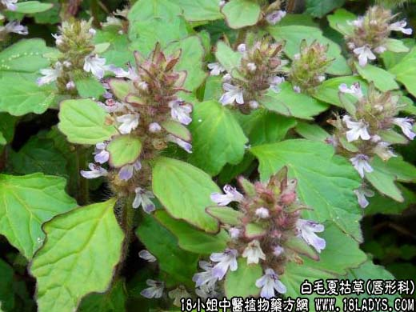

【中药概述】
白毛夏枯草为唇形科草本植物筋骨草的带花地上部分。苦，寒。归肺、肝、心经。
1．解毒消肿：用于咽喉肿痛、疮疡肿痛等，可单用本品30g，煎服，亦可用鲜草捣烂外敷。
2．止咳化痰：用于咳嗽痰多，肺热咳喘，咯痰黄稠等，可与前胡 枇杷叶等配伍。
3．凉血止血，用于咳血、衄血、外伤出血等，可与茅根、侧柏叶等同用。外伤出血可用鲜品捣烂外敷。
【临证应用】
用治白喉，喉炎、扁桃体炎，肺炎，慢性气管炎，上呼吸道感染：用白毛夏枯草鲜品用60g，干品30g，加适量糖，分2至3次服用，或配桔梗，天冬，麦冬，白及，花粉，生甘草等。
【药理作用】
1.本品之黄酮甙有止咳、祛痰及平喘作用；
2.对甲型链球菌、金黄色葡萄球菌、肺炎球菌、大肠杆菌、绿脓杆菌有较强的抑制作用。
【化学成分】
含生物碱、皂甙、黄酮甙、鞣质、有机酸、酚物质，还有糖及杯苋甾酮、蜕皮甾酮、筋骨草甾酮等。
【用量用法】
10——30g，水煎服，或入丸、散剂。